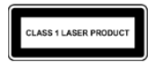

Información del teléfono Manual de seguridad y normativas.
Información del teléfono Manual de seguridad y normativas.Dónde encontrar la información del producto
Esta guía detallada contiene las mismas directrices de seguridad básicas que figuran en el manual de seguridad y garantía incluido con el Pixel 4a (5G), así como información adicional sobre seguridad, garantía y normativas de Pixel 4a (5G).
Información sobre seguridad, medio ambiente y normativas: g.co/pixel/safety o Ajustes Información del teléfono Manual de seguridad y normativas.
Información detallada sobre la garantía en el país de compra, con instrucciones sobre cómo presentar una reclamación: g.co/pixel/warranty.
Etiquetas normativas de productos electrónicos y valores de la tasa de absorción específica (SAR) del dispositivo: Ajustes Información del teléfono Etiquetas normativas.
Ayuda exhaustiva online: g.co/pixel/help.
 ADVERTENCIA: CONSULTA ESTA INFORMACIÓN SOBRE SALUD Y SEGURIDAD ANTES DE UTILIZAR EL DISPOSITIVO PARA REDUCIR EL RIESGO DE DAÑOS MATERIALES, INCLUIDO AL PIXEL 4a (5G), LESIONES PERSONALES, MOLESTIAS Y OTROS RIESGOS POTENCIALES.
ADVERTENCIA: CONSULTA ESTA INFORMACIÓN SOBRE SALUD Y SEGURIDAD ANTES DE UTILIZAR EL DISPOSITIVO PARA REDUCIR EL RIESGO DE DAÑOS MATERIALES, INCLUIDO AL PIXEL 4a (5G), LESIONES PERSONALES, MOLESTIAS Y OTROS RIESGOS POTENCIALES.
Utiliza tu Pixel 4a (5G) con cuidado. Puedes dañar el dispositivo o la batería si dejas caer el dispositivo o si lo desmontas, doblas, quemas, aplastas o perforas. No utilices el Pixel 4a (5G) si tiene la carcasa dañada, incluido si tiene la pantalla rota. Utilizar un Pixel 4a (5G) dañado puede causar el sobrecalentamiento de la batería o incluso lesiones. No expongas tu Pixel 4a (5G) a líquidos, ya que pueden provocar un cortocircuito y hacer que se sobrecaliente. Si tu Pixel 4a (5G) se moja, no intentes secarlo con una fuente de calor externa.
El Pixel 4a (5G) está diseñado para funcionar a una temperatura ambiente de entre 0 y 35 °C y debería almacenarse a una temperatura ambiente de entre ‑20 y 45 °C. No dejes el Pixel 4a (5G) en lugares donde la temperatura pueda superar los 45 °C, como el salpicadero del coche o cerca de una rejilla de calefacción, ya que esto podría dañar el Pixel 4a (5G), sobrecalentar la batería o suponer un riesgo de incendio. Mantén tu Pixel 4a (5G) alejado de fuentes de calor y de la luz solar directa. Si el dispositivo se calienta demasiado, desconéctalo de la fuente de alimentación a la que esté conectado (si fuera el caso), llévalo a un lugar más fresco y no lo utilices hasta que se haya enfriado. El Pixel 4a (5G) está diseñado para funcionar a una altitud de hasta 2000 m.
Determinados usos del Pixel 4a (5G), como jugar, grabar vídeos, emplear la linterna o utilizar la realidad virtual, pueden hacer que genere más calor del que generaría en condiciones normales de funcionamiento. En estas situaciones, puede que el Pixel 4a (5G) funcione en un modo de energía reducida o que se apague temporalmente. Ten especial cuidado cuando utilices el dispositivo en estos modos.
No intentes reparar tu Pixel 4a (5G) por tu cuenta. Desmontar el dispositivo puede conllevar la pérdida de resistencia al agua y podría provocar lesiones o daños en el dispositivo.
Si tu Pixel 4a (5G) no funciona correctamente o ha sufrido daños, no lo utilices y ponte en contacto con el servicio de atención al cliente. Para obtener más información, visita g.co/pixel/contact.
El adaptador de corriente y Pixel 4a (5G) deben tener una buena ventilación cuando se estén usando o cargando. Si utilizas cables o adaptadores de corriente dañados o cargas el dispositivo cuando hay humedad, se pueden producir incendios, descargas eléctricas, lesiones o daños en el Pixel 4a (5G) u otros objetos. Al cargar el Pixel 4a (5G), asegúrate de que el adaptador de corriente esté conectado a una toma de corriente situada cerca del Pixel 4a (5G) y de fácil acceso. No cargues el dispositivo mientras esté expuesto a la luz solar directa.
Al cargar el teléfono, comprueba que el adaptador de corriente esté conectado a un enchufe situado cerca del dispositivo y que se pueda acceder fácilmente al adaptador. Cuando desenchufes el adaptador de corriente, tira siempre del adaptador, no del cable de carga. No retuerzas ni pinces el cable y no fuerces ningún conector para introducirlo en un puerto. Si recibes un mensaje durante la carga en el que se te pide que desconectes el dispositivo que se está cargando o el adaptador de corriente, desconéctalo. Antes de intentar cargarlo de nuevo, comprueba que tanto el conector del cable de carga como el puerto de carga del teléfono estén secos y que no hay ningún objeto que se interponga entre ellos.
Carga el Pixel 4a (5G) únicamente con un cargador que cumpla el estándar USB‐C PD (como el adaptador de corriente incluido con el dispositivo) o un cargador USB‐C disponible en Google Store y en distribuidores autorizados de Google (busca la insignia "Made For" de Google). El adaptador de CA debe tener la certificación de fuente de alimentación limitada según el estándar IEC 60950‑1/62368‑1: 5 voltios de CC (máximo 3 amperios), 9 voltios de CC (máximo 2 amperios) o ambas opciones. Además, el adaptador de corriente debe cumplir los requisitos de la CTIA para la certificación del cumplimiento del sistema de baterías con la norma IEEE 1725. Este adaptador viene incluido junto con tu Pixel 4a (5G). Si no se utilizan accesorios de carga compatibles, pueden producirse incendios, descargas eléctricas, lesiones o daños en el teléfono y los accesorios.
El Pixel 4a (5G) y el cargador generan calor en condiciones de funcionamiento normal y cumplen los límites y estándares de temperatura de superficie aplicables. Cuando el dispositivo se esté utilizando o cargando, evita el contacto directo o indirecto de las superficies calientes con la piel de forma prolongada, ya que puede causar molestias o quemaduras. No duermas encima del dispositivo ni del adaptador de corriente; no los sostengas junto a ti ni los tapes con una manta o almohada. Ten en cuenta estas indicaciones si padeces alguna afección física que influya en tu capacidad para detectar el calor en la piel.
Este dispositivo no es un juguete. Tu teléfono puede contener o venir con piezas pequeñas, elementos de plástico, vidrio o metal, y piezas con bordes afilados que pueden causar daños o suponer un peligro de asfixia. Ha habido casos de niños que se han estrangulado con cables. Mantén los cables del teléfono fuera del alcance de los niños (a más de 1 metro de distancia) y no permitas que jueguen con el teléfono ni con sus accesorios. Podrían hacerse daño a sí mismos o a otras personas, o dañar accidentalmente el producto. Si se ingieren piezas pequeñas, acude al médico inmediatamente.
 La exposición prolongada a sonidos fuertes, incluida la música, puede provocar pérdida de audición. Para prevenir posibles daños auditivos, no escuches sonidos a un volumen elevado durante periodos largos. La exposición continua a volúmenes altos y ruido de fondo puede hacer que los sonidos no parezcan tan fuertes como lo son en realidad. Comprueba el volumen antes de utilizar los auriculares.
La exposición prolongada a sonidos fuertes, incluida la música, puede provocar pérdida de audición. Para prevenir posibles daños auditivos, no escuches sonidos a un volumen elevado durante periodos largos. La exposición continua a volúmenes altos y ruido de fondo puede hacer que los sonidos no parezcan tan fuertes como lo son en realidad. Comprueba el volumen antes de utilizar los auriculares.
Este teléfono contiene una batería de iones de litio recargable, un componente delicado que puede provocar lesiones si se daña. No intentes extraer la batería. Si quieres reemplazarla, ponte en contacto con Google o con un proveedor de servicios autorizado de Google. En la página g.co/pixel/contact aparece información de contacto. La sustitución por parte de profesionales no cualificados puede dañar el dispositivo. Reemplazarla de forma incorrecta o usar una batería no compatible puede suponer un riesgo de incendio, explosión y fugas, entre otros peligros. No modifiques, reacondiciones ni perfores la batería. Tampoco intentes introducir objetos dentro de ella. No la sumerjas ni la expongas al agua, otros líquidos, fuego, calor excesivo u otros peligros. No provoques cortocircuitos en la batería ni dejes que sus terminales entren en contacto con objetos metálicos o conductores. Evita que el teléfono o la batería se caigan. Si el teléfono o la batería se caen, especialmente si impactan sobre una superficie dura, y observas algún daño o crees que se ha podido producir alguno, ponte en contacto con Google o un proveedor de servicios autorizado por Google para que los examine. Si la batería tiene alguna fuga, procura que el líquido de la batería no entre en contacto con los ojos, la piel ni la ropa. Si ha entrado en contacto con los ojos, no te los frotes. Enjuágatelos con agua limpia inmediatamente y acude al médico.
Este teléfono contiene una batería de iones de litio recargable que cumple la norma IEEE 1725 y otros estándares aplicables.
Desecha el dispositivo, la batería y los accesorios de acuerdo con la normativa local. No los transportes ni los tires como si fueran residuos domésticos normales. Desecharlos de forma inadecuada puede provocar incendios, explosiones y otros peligros. No abras ni aplastes el teléfono. Tampoco lo calientes por encima de 45 °C ni lo quemes. Para obtener más información sobre cómo reciclar el teléfono, visita g.co/pixel/recycle.
Para evitar que los circuitos internos o las piezas del teléfono se dañen, no utilices ni almacenes el dispositivo o sus accesorios en entornos con polvo, humo, humedad o tierra ni cerca de campos magnéticos. Mantén el teléfono alejado de las fuentes de calor y de la luz solar directa. No dejes el teléfono dentro de un vehículo ni en lugares donde la temperatura pueda superar los 45 °C, como el salpicadero del coche, el alféizar de una ventana, cerca de una rejilla de calefacción o detrás de un cristal que esté expuesto a la luz solar directa o luz ultravioleta intensa durante un periodo prolongado. En estos casos es posible que el teléfono se dañe, que su batería se sobrecaliente o que haya un riesgo de incendio o explosión.
No cargues, utilices, almacenes ni transportes el teléfono en un lugar en el que se almacenen productos inflamables o explosivos (por ejemplo, gasolineras, depósitos de combustible o plantas químicas). No utilices el dispositivo inalámbrico donde se estén realizando explosiones o en entornos con riesgo de explosión, como áreas en las que el aire contenga niveles altos de sustancias químicas, vapores o partículas (por ejemplo, gránulos, polvo o polvos metálicos) inflamables. Si se producen chispas en esas zonas, es posible que provoquen una explosión o un incendio que causen lesiones corporales o incluso la muerte. Cumple todos los avisos y señales que haya en los lugares donde puedan existir estos peligros.
El teléfono puede acceder a servicios de cartografía y navegación. Los mapas y la navegación dependen de que la conexión de datos y los servicios de ubicación funcionen correctamente; puede que no estén disponibles en todo momento o en todas las zonas. Es posible que los mapas y las indicaciones no sean precisos, y las condiciones reales pueden diferir del mapa, los datos, el tráfico, las indicaciones, el contenido y otros resultados. Revisa detenidamente las indicaciones, sigue todas las normas y señales de tráfico aplicables, actúa según tu propio criterio y con sentido común, y utiliza los servicios de mapas y navegación bajo tu responsabilidad. En todo momento eres responsable de tus acciones y sus consecuencias. Para utilizar la navegación con realidad aumentada, es necesario que las imágenes de Google Street View estén actualizadas y que haya luz abundante en el exterior. Esta función no está disponible en la India.
El uso del dispositivo mientras realizas ciertas actividades puede suponer una distracción y provocar una situación peligrosa para ti u otras personas. Para reducir el riesgo de accidentes, y dado que es ilegal en muchos lugares, no utilices el dispositivo mientras conduces, montas en bici o manejas maquinaria, ni mientras desarrollas cualquier actividad que pueda tener consecuencias potencialmente graves. Cumple las leyes locales sobre el uso de dispositivos móviles, auriculares y cascos.
Este dispositivo se ha evaluado y cumple los requisitos normativos aplicables a la exposición a ondas de radio. Además, se ha diseñado y fabricado para no superar los límites de emisión aplicables a la energía de radiofrecuencia.
En los países en los que el límite de la tasa de absorción específica (SAR) es de 1,6 W/kg de media por cada gramo de tejido, los valores más altos de la SAR de G025E son de 1,20 W/kg cuando se utiliza pegado a la cabeza y de 1,20 W/kg cuando se usa a una distancia de 1,0 cm del cuerpo. En esos países, los valores de G6QU3 son 1,20 W/kg cuando se utiliza pegado a la cabeza y 1,20 W/kg a una distancia de 1,0 cm del cuerpo. En los países en los que el límite de la tasa de absorción específica (SAR) es de 2,0 W/kg de media por cada 10 g de tejido, los valores más altos de la SAR de este tipo de dispositivo son de 0,94 W/kg cuando se utiliza pegado a la cabeza y de 1,40 W/kg a una distancia de 5 mm del cuerpo.
Puedes consultar los valores de la SAR aplicables a cada una de esas jurisdicciones en tu Pixel 4a (5G) si accedes a Ajustes Información del teléfono Etiquetas normativas.
Para reducir la exposición a la energía de radiofrecuencia, utiliza una opción de manos libres, como el altavoz integrado, los auriculares incluidos u otros accesorios similares. Comprueba que los accesorios del dispositivo (como la funda o la carcasa) no contengan componentes metálicos. Mantén el dispositivo separado del cuerpo para cumplir el requisito de distancia.
Puedes consultar más información sobre la SAR en las siguientes páginas:
fcc.gov
icnirp.org
ec.europa.eu
dot.gov.in
Sigue las normas que prohíban el uso de tecnología inalámbrica (p. ej., móvil o Wi‑Fi). El dispositivo está diseñado para cumplir las normativas que rigen las emisiones de radiofrecuencias, pero el uso de dispositivos inalámbricos puede afectar negativamente a otros equipos electrónicos. Por ejemplo, al viajar en avión o justo antes de embarcar, debes seguir siempre las instrucciones que proporciona la compañía aérea para utilizar el dispositivo inalámbrico. El uso de un dispositivo inalámbrico en un avión puede afectar a las redes inalámbricas, ser peligroso para el funcionamiento del avión o ser ilegal. Es posible que puedas utilizar el dispositivo en modo avión.
Los dispositivos inalámbricos pueden no ser fiables para realizar comunicaciones de emergencia. Este dispositivo funciona con señales de radio, no puede establecer o mantener una conexión en determinadas condiciones y utiliza una batería recargable que puede verse afectada por la temperatura, el uso, los posibles daños que reciba y otras condiciones. Aunque algunas jurisdicciones transmiten información de emergencia a través de redes inalámbricas, es posible que el dispositivo no reciba siempre estas comunicaciones a causa de la conectividad de la red u otros factores. Puede que algunas funciones y comunicaciones o información de emergencia solo estén disponibles en algunos idiomas y zonas.
El dispositivo usa radios y otros componentes que emiten campos electromagnéticos, y también contiene imanes. Estos campos electromagnéticos e imanes pueden interferir con marcapasos y otros dispositivos médicos implantados. Mantén siempre el teléfono y el cargador a una distancia segura del marcapasos u otros dispositivos médicos implantados. Si tienes alguna duda sobre el uso de tu dispositivo de Google cerca de un marcapasos u otros dispositivos médicos implantados, consulta a tu médico antes de utilizar el teléfono. Si sospechas que el teléfono interfiere con tu marcapasos u otros dispositivos médicos implantados, apágalo y ponte en contacto con tu médico para obtener información específica sobre el dispositivo médico que llevas.
Apaga tu dispositivo inalámbrico cuando se te solicite en hospitales, clínicas o centros de salud. Estas normas pretenden evitar posibles interferencias con equipos médicos sensibles.
El teléfono y las funciones asociadas a sus aplicaciones de actividad física no son dispositivos médicos y solo se deben usar con fines informativos. No están concebidos ni diseñados para curar, monitorizar, aliviar, tratar o prevenir enfermedades u otras afecciones ni para usarlos en su diagnóstico.
Un pequeño porcentaje de usuarios puede experimentar dolores de cabeza, crisis epilépticas o desmayos causados por estímulos visuales, como destellos intermitentes o patrones de luz intensa. Estos síntomas pueden darse en personas que no los hayan sufrido con anterioridad. Si ya has sufrido convulsiones, desmayos o epilepsia, o padeces alguna enfermedad en la que podría influir el uso del teléfono, consulta a un médico antes de usar el dispositivo. Deja de utilizar el teléfono inmediatamente y acude a un médico si experimentas cualquier síntoma que creas que pueda estar provocado o afectado por el teléfono (como dolores de cabeza, desmayos o convulsiones).
Las actividades repetitivas, como escribir, tocar la pantalla o deslizar el dedo por ella, pueden causar molestias en los dedos, manos, muñecas, brazos, hombros u otras partes del cuerpo. Si experimentas cualquier incomodidad por estas actividades, deja de usar el teléfono y consulta a un médico.
 Precaución: Pixel 4a (5G) está clasificado como producto láser de clase 1 según el estándar IEC 60825‑1, edición 3. El diseño de este producto incorpora componentes ópticos y una estructura protectora para que no se pueda acceder a un nivel de radiación láser por encima de la clase 1. Este producto cumple con las normas de 21 CFR 1040.10 y 1040.11, a excepción de la norma IEC 60825-1, edición 3., tal y como se describe en la directriz Laser Notice n.º 56, del 8 de mayo del 2019. Si se utilizan controles o ajustes, o se realizan procedimientos diferentes de los que se definen en este documento, se puede correr el riesgo de exponerse a radiación peligrosa.
Dispositivo láser: Google LLC, 1600 Amphitheatre Parkway, Mountain View, CA 94043 (Estados Unidos).
Sigue estas directrices al utilizar, almacenar, limpiar o desechar tu Pixel 4a (5G):
No utilices ni cargues el Pixel 4a (5G) cuando la temperatura ambiente sea inferior a 0 °C o superior a 35 °C. Si la temperatura interna del dispositivo sobrepasa los niveles normales de funcionamiento, el dispositivo intentará regular su temperatura y es posible que, durante el proceso, su rendimiento y conectividad se reduzcan, se apague la pantalla o el dispositivo, o no puedas cargarlo. Mientras el dispositivo regula su temperatura, tal vez no puedas utilizarlo. Llévalo a un lugar más fresco (o más cálido) y espera unos minutos antes de intentar usarlo de nuevo.
Desconecta el Pixel 4a (5G) y el adaptador de corriente antes de limpiarlos, durante las tormentas eléctricas y cuando no vayan a utilizarse durante un periodo prolongado. No limpies el Pixel 4a (5G) mientras se carga, ya que podría causar lesiones o daños en el dispositivo. Procura no usar materiales disolventes ni abrasivos que puedan dañar la superficie del producto.
El contacto con maquillaje, sustancias químicas y materiales teñidos, como el tejido vaquero, puede manchar el Pixel 4a (5G) y las fundas de color claro.
Te recomendamos que limpies tu Pixel 4a (5G) cuidadosamente con un paño suave que no deje pelusas. Utiliza un trapo seco para quitar las líneas de suciedad, manchas o polvo, y un trapo ligeramente humedecido (no mojado) para quitar las manchas de colores, como las provocadas por maquillaje o por vaqueros recién estrenados. Si necesitas quitar manchas y suciedad de la pantalla, utiliza toallitas para gafas o pantallas; si las manchas están en la parte posterior o en los laterales, usa toallitas de limpieza normales sin jabón ni lejía. Para consultar instrucciones adicionales sobre el cuidado y la limpieza, visita g.co/pixel/care.
Para desinfectar el Pixel 4a (5G), incluida la pantalla, puedes utilizar toallitas desinfectantes normales o que tengan un 70 % de alcohol isopropílico, pero no toallitas con lejía.
No coloques cerca del Pixel 4a (5G) ni de su cable de carga objetos que contengan imanes o sean sensibles a los campos magnéticos, como tarjetas de crédito, tarjetas bancarias, cintas de audio o de vídeo, o dispositivos de memoria magnéticos, ya que podrías perder la información almacenada en ellos. Los objetos que contengan información sensible al magnetismo se deben mantener a una distancia de al menos 5 cm del Pixel 4a (5G).
Solo Google o un proveedor de servicios autorizados por Google deben reparar el Pixel 4a (5G). Las modificaciones o reparaciones no autorizadas pueden ocasionar daños permanentes en el dispositivo y afectar a la cobertura de la garantía y las autorizaciones normativas. Para recibir asistencia autorizada, ponte en contacto con el servicio de atención al cliente. Para recibir ayuda y asistencia online, visita g.co/pixel/help. Si envías tu teléfono al servicio de asistencia, es posible que recibas otro reacondicionado en sustitución del original. Asimismo, se podrán usar piezas reacondicionadas para reparar los productos. Las reparaciones o los recambios pueden ocasionar la pérdida de datos generados por los usuarios.
Puedes consultar información sobre normativas, certificaciones y cumplimiento específica de Pixel 4a (5G) en tu dispositivo si vas a Ajustes Información del teléfono Etiquetas normativas.
Importante: Se ha demostrado que este dispositivo y su adaptador de corriente cumplen las normas sobre compatibilidad electromagnética (CEM) en condiciones que incluyen el uso de dispositivos periféricos y cables blindados válidos entre los componentes del sistema. Es importante que, al conectar los componentes del sistema, utilices dispositivos periféricos y cables blindados que cumplan la normativa, para reducir la probabilidad de provocar interferencias con radios, televisores y otros dispositivos electrónicos.
Nota: Este equipo se ha sometido a pruebas y se ha determinado que cumple los límites establecidos para los dispositivos digitales de clase B de acuerdo con las disposiciones de la sección 15 de la normativa de la FCC. Estos límites están concebidos para proporcionar una protección razonable contra interferencias perjudiciales en una instalación residencial. Este equipo genera, utiliza y puede irradiar energía de radiofrecuencia, por lo que, si no se instala y se usa como se indica en las instrucciones, podría producir interferencias perjudiciales en las comunicaciones por radio. No obstante, no se puede garantizar que no se produzcan interferencias en una instalación en particular. Si este equipo causa interferencias perjudiciales en la recepción de señales de radio o televisión (que se pueden detectar apagando y encendiendo el dispositivo), recomendamos al usuario que intente corregir dichas interferencias mediante una o varias de las siguientes soluciones:
Las modificaciones que Google no apruebe expresamente pueden anular tu autoridad para utilizar el equipo.
Este dispositivo cumple las disposiciones de la sección 15 de la normativa de la FCC. Su funcionamiento está sujeto a estas dos condiciones:
Modelo: G025E, G6QU3
Parte responsable:
Google LLC
1600 Amphitheatre Parkway
Mountain View, CA 94043 (Estados Unidos)
g.co/pixel/support
Se ha evaluado y se ha certificado que Pixel 4a (5G) es compatible con audífonos según la especificación técnica ANSI C63.19. Hay dos medidas de compatibilidad con audífonos:
Clasificación M. Esta es la medida de la inmunidad a las interferencias de radiofrecuencias que poseen los audífonos con acoplamiento acústico.
Clasificación T. Esta es la medida de rendimiento cuando el teléfono se utiliza con audífonos con acoplamiento inductivo (telecoil).
Se ha asignado la clasificación M3/T4 a los modelos G025E y G6QU3 de Pixel 4a (5G) según las normativas de la FCC sobre la compatibilidad con audífonos para dispositivos inalámbricos.
Según las normas de la FCC, se considera que un teléfono móvil es compatible con audífonos si se le asigna la clasificación M3 o M4 para los modelos con acoplamiento acústico o T3 o T4 para los de acoplamiento inductivo.
El teléfono se ha sometido a pruebas y se ha determinado que se puede utilizar con algunas de las tecnologías inalámbricas que usan los audífonos. Sin embargo, es posible que se utilicen tecnologías inalámbricas más recientes en estos teléfonos que aún no se hayan probado con audífonos. Es importante probar las diferentes funciones del teléfono detenidamente y en distintas ubicaciones mientras se utiliza el audífono o el implante coclear para determinar si se detecta alguna interferencia. Consulta a tu proveedor de servicios o a Google para obtener más información sobre la compatibilidad con audífonos. Si tienes alguna pregunta sobre las políticas de devolución o sustitución, consulta a tu proveedor de servicios o al vendedor de tu teléfono.
Para informarte sobre el reciclaje en Estados Unidos, visita g.co/pixel/recycle.
Este dispositivo digital de clase B cumple la norma CAN ICES‑3 (B)/NMB‑3(B).
Cet appareil numérique de la classe B est conforme à la norme NMB-003 du Canada.
Pixel 4a (5G) cumple la normativa RSS de exención de licencia del IC (departamento de innovación, ciencia y desarrollo económico de Canadá). Su funcionamiento está sujeto a estas dos condiciones:
Le présent appareil est conforme aux CNR d'IC Canada applicables aux appareils radio exempts de licence. L'exploitation est autorisée aux deux conditions suivantes:
Los dispositivos que funcionan en la banda de 5150 a 5250 MHz son solo para uso en interiores con el objetivo de reducir el riesgo de provocar interferencias perjudiciales en los sistemas de satélites móviles que utilizan los mismos canales.
Les dispositifs fonctionnant dans la bande de 5 150 à 5 250 MHz sont réservés uniquement pour une utilisation à l’intérieur afin de réduire les risques de brouillage préjudiciable aux systèmes de satellites mobiles utilisant les mêmes canaux.
 Por el presente documento, Google LLC manifiesta que el equipo radioeléctrico G025I cumple la Directiva sobre equipos radioeléctricos 2014/53/UE. Puedes consultar la declaración de conformidad completa en g.co/pixel/conformity.
Por el presente documento, Google LLC manifiesta que el equipo radioeléctrico G025I cumple la Directiva sobre equipos radioeléctricos 2014/53/UE. Puedes consultar la declaración de conformidad completa en g.co/pixel/conformity.
Restricciones y requisitos de la Directiva 2014/53/UE:
Este dispositivo solamente puede usarse en interiores cuando funcione en el intervalo de frecuencias de 5150 a 5350 MHz en AT, BE, BG, CY, CZ, DE, DK, EE, EL, ES, FI, FR, HR, HU, IE, IT, LT, LU, LV, MT, NL, PL, PT, RO, SE, SI, SK, UK, CH, IS, LI, NO y TR.
Los datos que se muestran a continuación corresponden a la energía de radiofrecuencia máxima que transmiten las bandas de frecuencia en las que funciona el equipo de radio.
| Frecuencia | Potencia |
|---|---|
| Wi‑Fi: 2400‑2483,5 MHz | 20 dBm |
| Wi‑Fi: 5150‑5250 MHz | 23 dBm |
| Wi‑Fi: 5250‑5350 MHz | 23 dBm |
| Wi‑Fi: 5470‑5725 MHz | 23 dBm |
| Wi-Fi 5725-5850 MHz | 14 dBm |
| Bluetooth: 2400‑2483,5 MHz | 20 dBm |
| NFC: 13,56 MHz | 0 dBuA/m |
| GSM: 900 | 33,5 dBm |
| GSM: 1800 | 31 dBm |
| UMTS: bandas I y VIII | 25,7 dBm |
| LTE: 1, 3, 7, 8, 20, 28, 38, 40 y 42 | 25,7 dBm |
| LTE: 38 HPUE | 27,5 dBm |
| NR: n1, n3, n7, n8, n28, n40, n77 y n78 | 25,7 dBm |
| NR: n78 HPUE | 26,5 dBm |
Google no se responsabiliza de las interferencias de radio o televisión provocadas por la modificación no autorizada de estos dispositivos o sus accesorios, o por la sustitución o instalación de cables y equipos de conexión distintos a los que especifica Google. La corrección de las interferencias causadas por esa modificación, sustitución o instalación no autorizadas correrá a cargo del usuario. Ni Google ni sus distribuidores autorizados se responsabilizan de los daños o de las infracciones de normativas gubernamentales que puedan derivarse del incumplimiento de estas directrices por parte del usuario.
 El símbolo RAEE indica que ni tu producto ni sus baterías se deben desechar junto a los residuos domésticos, de acuerdo con la normativa y la legislación locales. Cuando el producto llegue al final de su vida útil, deposítalo en un punto de recogida designado por las autoridades locales para que se elimine o se recicle de manera segura. La recogida y el reciclaje por separado del producto, sus accesorios eléctricos y su batería ayudarán a conservar los recursos naturales y a proteger la salud pública y el medio ambiente.
El símbolo RAEE indica que ni tu producto ni sus baterías se deben desechar junto a los residuos domésticos, de acuerdo con la normativa y la legislación locales. Cuando el producto llegue al final de su vida útil, deposítalo en un punto de recogida designado por las autoridades locales para que se elimine o se recicle de manera segura. La recogida y el reciclaje por separado del producto, sus accesorios eléctricos y su batería ayudarán a conservar los recursos naturales y a proteger la salud pública y el medio ambiente.
Este producto cumple la Directiva 2011/65/UE del Parlamento Europeo y del Consejo del 8 de junio del 2011 sobre restricciones a la utilización de determinadas sustancias peligrosas en aparatos eléctricos y electrónicos (RoHS), así como sus adendas.
El reglamento CE n.º 1907/2006 sobre registro, evaluación, autorización y restricción de las sustancias y preparados químicos (REACH) constituye el marco normativo de la Unión Europea para el tratamiento de estas sustancias. En Google cumplimos todos los requisitos de la normativa y nos comprometemos a informar a nuestros clientes sobre la presencia de las sustancias extremadamente preocupantes (SEP) que se describen en el reglamento REACH. Para obtener más información, puedes ponerte en contacto con Google a través de la dirección Env-Compliance@google.com.
Para consultar cualquier cuestión sobre la normativa de la Unión Europea, puedes contactar con Google Commerce Limited, 70 Sir John Rogerson's Quay, Dublín 2, Irlanda.
Fabricante: Google LLC, 1600 Amphitheatre Parkway, Mountain View, CA 94043 (EE. UU.)
Importador: Google Commerce Limited, 70 Sir John Rogerson’s Quay, Dublín 2, Irlanda
La función WLAN de estos dispositivos está restringida únicamente a su uso en interiores cuando se usa el intervalo de frecuencias de 5150 a 5350 MHz, para reducir la posibilidad de provocar interferencias perjudiciales en los sistemas de satélites móviles que utilizan los mismos canales.
Para ponerte en contacto con el servicio de atención al cliente, llama al 1-800-884-355. Los productos que se envíen para repararse se podrán sustituir por otros reacondicionados del mismo tipo en vez de repararse. Asimismo, se podrán usar piezas reacondicionadas para reparar los productos. Si los productos contienen datos generados por los usuarios, la reparación o sustitución podría ocasionar la pérdida de esos datos.
| Cumple la normativa IMDA DA107248 |
Cuando se utiliza la frecuencia de 5 GHz (W52/W53), el dispositivo solo se puede usar en interiores (excepto cuando se comunica con una radio de alta potencia).
Este equipo es de clase B. Aunque está diseñado para utilizarse en un entorno residencial, podría provocar interferencias si se utiliza cerca de un receptor de radio o de televisión. Sigue las instrucciones del manual.
 VCCI-B
VCCI-B
無線射頻暴露
以 G025E 而言, SAR 標準值：2.0 W/kg, 送測產品實測值：0.75 W/kg.
台灣法規遵循
使用過度恐傷害視力
減少電磁波影響，請妥適使用
經型式認證合格之低功率射頻電機，非經許可，公司、商號或使用者均不得擅自變更頻率、加大功率或變更原設計之特性及功能。
低功率射頻電機之使用不得影響飛航安全及干擾合法通信；經發現有干擾現象時，應立即停用，並改善至無干擾時方得繼續使用。
前項合法通信，指依電信法規定作業之無線電通信。低功率射頻電機須忍受合法通信或工業、科學及醫療用電波輻射性電機設備之干擾。
本裝置之使用應避免影響附近雷達系統之操作。
經過格式化的實際儲存空間容量會略減。
| Nombre del equipo: adaptador de corriente USB-C de 18 W. Designación de tipo: G1000-US, TC G1000-US, TC G1001-US, GR4RC 設備名稱：交換式電源供應器，型號（型式）：G1000-US, TC G1000-US, TC G1001-US, GR4RC |
|||||||
單元\ Unidad |
限用物質及其化學符號 Sustancias restringidas y sus símbolos químicos |
||||||
| 鉛Plomo (Pb) |
汞Mercurio (Hg) |
鎘Cadmio (Cd) |
六價鉻 Cromo hexavalente (Cr+6) |
多溴聯苯 Bifenilos polibromados (PBB) |
多溴二苯醚 Éteres difenílicos polibromados (PBDE) |
||
| 外殼 Carcasa | O | O | O | O | O | O | |
| 電子元件 Componente electrónico |
— | O | O | O | O | O | |
| 連接器 Conector | — | O | O | O | O | O | |
| 電路板 PCB | O | O | O | O | O | O | |
| 變壓器 Transformador | O | O | O | O | O | O | |
| 塑膠件 Componentes de plástico |
O | O | O | O | O | O | |
| 包裝 Embalaje | O | O | O | O | O | O | |
| 其它 Otros | O | O | O | O | O | O | |
|
備考1.〝超出0,1 wt %〞及〝超出0,01 wt %〞係指限用物質之百分比含量超出百分比含量基準值。 備考2.〝O〞係指該項限用物質之百分比含量未超出百分比含量基準值。 備考3.〝—〞係指該項限用物質為排除項目。 |
|||||||
| Nombre del equipo: Pixel 4a (5G). Designación de tipo: G025E 設備名稱：移動電話，型號（型式）：G025E |
|||||||
單元\ Unidad |
限用物質及其化學符號 Sustancias restringidas y sus símbolos químicos |
||||||
| 鉛Plomo (Pb) |
汞Mercurio (Hg) |
鎘Cadmio (Cd) |
六價鉻 Cromo hexavalente (Cr+6) |
多溴聯苯 Bifenilos polibromados (PBB) |
多溴二苯醚 Éteres difenílicos polibromados (PBDE) |
||
| 外殼 Carcasa | O | O | O | O | O | O | |
| 電子元件 Componente electrónico |
— | O | O | O | O | O | |
| 連接器 Conector | — | O | O | O | O | O | |
| 電路板 PCB | O | O | O | O | O | O | |
| 顯示 Pantalla | O | O | O | O | O | O | |
| 電池 Batería | — | O | O | O | O | O | |
| 包裝 Embalaje | O | O | O | O | O | O | |
| 其它 Otros | O | O | O | O | O | O | |
|
備考1.〝超出0,1 wt %〞及〝超出0,01 wt %〞係指限用物質之百分比含量超出百分比含量基準值。 備考2.〝O〞係指該項限用物質之百分比含量未超出百分比含量基準值。 備考3.〝—〞係指該項限用物質為排除項目。 |
|||||||
La garantía comercial puede consultarse en el Centro de Garantía de Google.
Pixel, Google, el logotipo de la G y las marcas y logotipos relacionados son marcas de Google LLC. Wi‑Fi® y el logotipo de Wi‑Fi son marcas de Wi‑Fi Alliance. La marca denominativa Bluetooth® y sus logotipos son marcas registradas de Bluetooth SIG, Inc. El resto de las marcas pertenecen a sus respectivos propietarios.